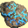
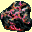
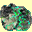
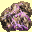
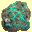
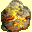

Výroba pøedmìtù z rudy
V sedmém díle máte mo¾nost sbírat rùzné druhy rud, které se li¹í svou kvalitou. Trojice obyvatel ve Steadwicku v Erathii vám z nich pak mù¾e vyrobit urèitý typ pøedmìtu. Robert Sourbrow vyrábí zbroje, Qillain Laraselle zbranì, ostatní pøedmìty vyrábí Cloud Agraynel. Èím kvalitnìj¹í rudu máte, tím lep¹í pøedmìt vám z ní daná postava mù¾e vyrobit, ale neni to pravidlem. I ze Staltové rudy vám s klidem mù¾ou vyrobit pøedmìt nízké kvality.
|  | Název: | ®elezná ruda |
| Malá hrouda ¾elezné rudy. Zku¹ený kováø doká¾e z této rudy vykovat zbraò, amulet, prsten, zbroj nebo jinou u¾iteènou vìc. | ||
| Cena: | 5 | |
|  | Název: | Siertalová ruda |
| Malá hrouda siertalové rudy. Ruda je pevnìj¹í a lehèí ne¾ ocel a zku¹ený kováø doká¾e z této rudy vykovat vyjímeènou zbraò, amulet, prsten, zbroj nebo jinou u¾iteènou vìc. | ||
| Cena: | 50 | |
|  | Název: | Phyltová ruda |
| Malá hrouda phyltové rudy. Phylt se èasto pou¾ívá k legování ocele pro zvý¹ení její pevnosti a schopnosti okouzlení. Zku¹ený kováø doká¾e z této rudy vykovat zbraò, amulet, prsten, zbroj nebo jinou u¾iteènou vìc. | ||
| Cena: | 100 | |
|  | Název: | Kergarová ruda |
| Malá hrouda kergarové rudy. Kergar se ve mnohém podobá oceli, ale je snáze okouzlitelný. Zku¹ený kováø doká¾e z této rudy vykovat magickou zbraò, amulet, prsten, zbroj nebo jinou u¾iteènou vìc. | ||
| Cena: | 500 | |
|  | Název: | Erudinová ruda |
| Malá hrouda erudinové rudy. Vzácná magická ruda se nachází pouze v nìkolika oblastech Erathie. Zku¹ený kováø doká¾e z této rudy vykovat mocnou zbraò, amulet, prsten, zbroj nebo jinou u¾iteènou vìc. | ||
| Cena: | 1000 | |
|  | Název: | Staltová ruda |
| Malá hrouda staltové rudy. Tato ruda je snadno okouzlitelná a tvrdá jako obsidián. Zku¹ený kováø doká¾e z této rudy vykovat neuvìøitelnì mocnou zbraò, amulet, prsten, zbroj nebo jinou u¾iteènou vìc. | ||
| Cena: | 2000 | |
copyright 2002 - 2022 by Petr 'Elemir' Levák v¹echna práva vyhrazena